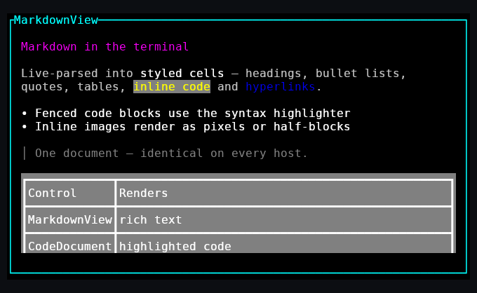
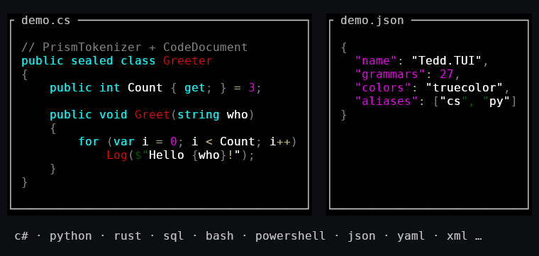
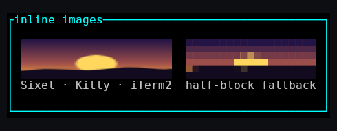
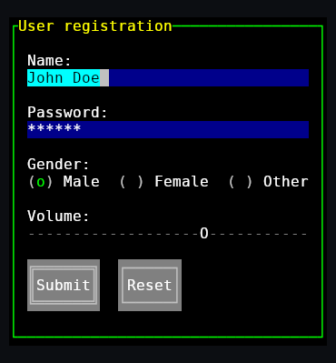

Define a terminal user interface in XAML or C#. Render the same character-cell grid in terminals, browsers, desktop frameworks, native SDL2 windows, or any SkiaSharp canvas.
One UI definition. Identical cells, colors, layout, and interaction semantics across supported hosts.
.NET 10Current target framework
8 host familiesTerminal, web, desktop, and native
50+ controlsLayouts, inputs, data, and overlays
MITOpen-source library
Start with the core and one host
Install only the packages your application requires.
The core package contains controls, layout, binding, routed events, templates, and XAML loading. Add a platform package for each required rendering target.
<!-- The same file runs on every host. --><TuiWindow><BorderBoxStyle="Double"><StackPanel><TextBlockText="System status"/><ProgressBarValue="{Binding Progress}"/><ButtonContent="Cancel"/></StackPanel></Border></TuiWindow>
C#Program.cs
var window = new TuiWindow
{
Content = new Border
{
BoxStyle = BoxStyle.Double,
Child = new StackPanel
{
// Add controls or load XAML.
}
}
};
new TuiApp(window).Run();
Eight host families
Select a renderer without redesigning the interface.
Each host consumes the same resolved character-cell grid and returns keyboard, pointer, and wheel input in cell coordinates.
01
>_
Terminal
Truecolor VT output, diff-based updates, keyboard and pointer input, and automatic backend selection.
Tedd.TUI.Platform.Console02
◇
Blazor
Canvas or DOM rendering in the browser, with Razor components and XAML loading.
Tedd.TUI.Platform.Blazor03
▦
WPF
Character-cell rendering inside WPF, including live preview in the Visual Studio XAML designer.
Tedd.TUI.Platform.Wpf04
△
Avalonia
SkiaSharp-backed hosting for Windows, macOS, and Linux applications.
Tedd.TUI.Platform.Avalonia05
⊞
WinUI 3
A Windows App SDK control backed by the shared Skia cell renderer.
Tedd.TUI.Platform.WinUI06
⌁
.NET MAUI
A cross-platform view for Android, iOS, Mac Catalyst, and Windows.
Tedd.TUI.Platform.Maui07
◫
SkiaSharp
Direct rendering to any SKCanvas, including headless PNG generation.
Tedd.TUI.Platform.Skia08
▣
SDL2
A native SDL2 window or integration with an existing SDL render loop.
Tedd.TUI.Platform.Sdl2
WPF-inspired composition
Controls, layout, and interaction use one coherent model.
Dependency properties, inherited data context, templates, triggers, routed events, focus management, and overlays support composable application interfaces.
Render documents, source code, and decoded images through the same host-independent control tree.

01
Markdown
MarkdownView renders headings, emphasis, lists, quotations, tables, links, code fences, and images. Themes control every semantic style.

02
Source code
CodeDocument provides Prism-style tokenization with 76 bundled language grammars and configurable token colors.

03
Images
The Image control uses Sixel, Kitty, or iTerm2 graphics where available and a truecolor half-block representation elsewhere.
Deterministic rendering contract
Built for long-running interactive applications.
The rendering pipeline computes a virtual character grid. Terminal renderers compare consecutive frames and emit only changed cells. Event-driven terminal hosts remain idle until input or invalidation requires work.
Layout: recursive measure and arrange passes with clipping.
Rendering: double-buffered cell output and differential updates.
Input: tunneled and bubbling routed events with mouse capture.
State: dependency properties, binding, templates, and triggers.
Tedd.TUI · form controls

Renderer output from the library’s documentation screenshot project.
Reference material
Proceed from installation to host-specific integration.